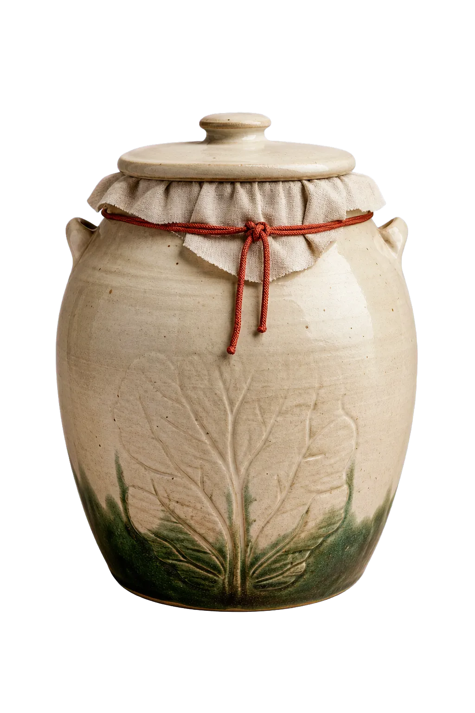

Cabbage, salt, time, attention.
Slow alive

We teach one honest jar from first cut to bright, fizzing finish. No mystery starter. No wellness sermon. Just microbes doing patient work.
Next batch turns on 26 July.01—03
A recipe measured in attention.
-
Cut
Local cabbage, irregular on purpose.
-
Press
Salt draws its own clean brine.
-
Listen
Taste each day; stop when it sings.
Saturday · 11:00—13:30
Make a jar.
Meet its weather.
Six seats, lunch included, your ferment goes home with you.